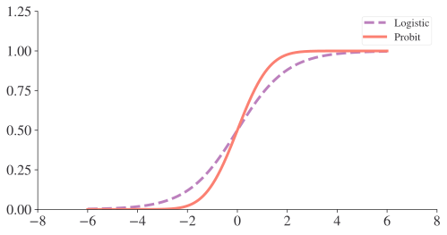
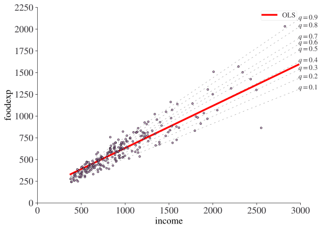
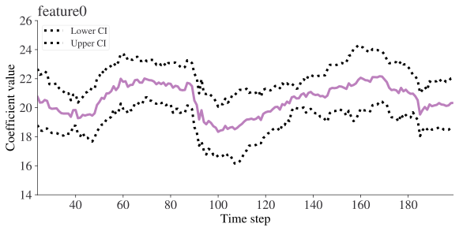
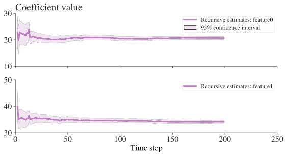

import matplotlib.pyplot as plt
import numpy as np
import pandas as pd
import statsmodels.api as sm
import statsmodels.formula.api as smf
from lets_plot import *
LetsPlot.setup_html()
# Set seed for random numbers
seed_for_prng = 78557
prng = np.random.default_rng(
seed_for_prng
) # prng=probabilistic random number generatorGeneralised regression models
Introduction
In this chapter, you’ll learn how to run more generalised regressions with code. This will include logit, probit, generalised linear models, random effects, quantile regressions, and rolling + recursive regressions.
Most of this chapter will rely on the amazing statsmodels package, including for some of the examples. Some of the material in this chapter follows Grant McDermott’s excellent notes and the Library of Statistical Translation.
Imports
Let’s import some of the packages we’ll be using:
Logit, probit, and generalised linear models
For this section, we’ll be using the statsmodels package. statsmodels has been around a long time (and is more mature than pyfixest), but it doesn’t absorb fixed effects, and it doesn’t have an out-of-the-box instrumental variables regression function. The two packages are similar in that you can use formulae in both.
Logit
A logistical regression, aka a logit, is a statistical method for a best-fit line between a regressors X and an outcome varibale y that takes on values in (0, 1).
The function that we’re assuming links the regressors and the outcome has a few different names but the most common is the sigmoid function or the logistic function. The data generating process is assumed to be
{\displaystyle \mathbb{P}(Y=1\mid X) = \frac{1}{1 + e^{-X'\beta}}}
we can also write this as \ln\left(\frac{p}{p-1}\right) = \beta_0 + \sum_i \beta_i x_i to get a ‘log-odds’ relationship. The coefficients from a logit model do not have the same interpration as in an OLS estimation, and you can see this from the fact that \partial y/\partial x_i \neq \beta_i for logit. Of course, you can work out what the partial derivative is for yourself but most packages offer a convenient way to quickly recover the marginal effects.
Logit models are available in scikit-learn and statsmodels but bear in mind that the scikit-learn logit model is, ermm, extremely courageous in that regularisation is applied by default. If you don’t know what that means, don’t worry, but it’s probably best to stick with statsmodels as we will do in this example.
We will predict a target GRADE, representing whether a grade improved or not, based on some regressors including participation in a programme.
# Load the data from Spector and Mazzeo (1980)
df = sm.datasets.spector.load_pandas().data
# Look at info on data
print(sm.datasets.spector.NOTE)::
Number of Observations - 32
Number of Variables - 4
Variable name definitions::
Grade - binary variable indicating whether or not a student's grade
improved. 1 indicates an improvement.
TUCE - Test score on economics test
PSI - participation in program
GPA - Student's grade point average
res_logit = smf.logit("GRADE ~ GPA + TUCE + PSI", data=df).fit()
print(res_logit.summary())Optimization terminated successfully.
Current function value: 0.402801
Iterations 7
Logit Regression Results
==============================================================================
Dep. Variable: GRADE No. Observations: 32
Model: Logit Df Residuals: 28
Method: MLE Df Model: 3
Date: Sun, 12 Apr 2026 Pseudo R-squ.: 0.3740
Time: 14:50:17 Log-Likelihood: -12.890
converged: True LL-Null: -20.592
Covariance Type: nonrobust LLR p-value: 0.001502
==============================================================================
coef std err z P>|z| [0.025 0.975]
------------------------------------------------------------------------------
Intercept -13.0213 4.931 -2.641 0.008 -22.687 -3.356
GPA 2.8261 1.263 2.238 0.025 0.351 5.301
TUCE 0.0952 0.142 0.672 0.501 -0.182 0.373
PSI 2.3787 1.065 2.234 0.025 0.292 4.465
==============================================================================So, did participation (PSI) help increase a grade? Yes. But we need to check the marginal effect to say exactly how much. We’ll use get_margeff() to do this, we’d like the derivative of y with respect to x effect, and we’ll take it at the mean of each regressor.
marg_effect = res_logit.get_margeff(at="mean", method="dydx")
marg_effect.summary()| Dep. Variable: | GRADE |
|---|---|
| Method: | dydx |
| At: | mean |
| dy/dx | std err | z | P>|z| | [0.025 | 0.975] | |
|---|---|---|---|---|---|---|
| GPA | 0.5339 | 0.237 | 2.252 | 0.024 | 0.069 | 0.998 |
| TUCE | 0.0180 | 0.026 | 0.685 | 0.493 | -0.033 | 0.069 |
| PSI | 0.4493 | 0.197 | 2.284 | 0.022 | 0.064 | 0.835 |
So participation gives almost half a grade increase.
Probit
Probit is very similar to logit: it’s a statistical method for a best-fit line between regressors X and an outcome varibale y that takes on values in (0, 1). And, just like with logit, the function that we’re assuming links the regressors and the outcome has a few different names!
The data generating process is assumed to be
{\displaystyle \mathbb{P}(Y=1\mid X)=\Phi (X^{T}\beta )}
where
{\displaystyle \Phi (x)={\frac {1}{\sqrt {2\pi }}}\int _{-\infty }^{x}e^{-{\frac {y^{2}}{2}}}dy.}
is the cumulative standard normal (aka Gaussian) distribution. The coefficients from a probit model do not have the same interpration as in an OLS estimation, and you can see this from the fact that \partial y/\partial x_i \neq \beta_i for probit. And, just as with logit, although you can derive the marginal effects, most packages offer a convenient way to quickly recover them. Of particular note is the pymarginaleffects package by Vincent Arel-Bundock.
We can re-use our previous example of predicting a target GRADE, representing whether a grade improved or not, based on some regressors including participation (PSI) in a programme.
res_probit = smf.probit("GRADE ~ GPA + TUCE + PSI", data=df).fit()
print(res_probit.summary())Optimization terminated successfully.
Current function value: 0.400588
Iterations 6
Probit Regression Results
==============================================================================
Dep. Variable: GRADE No. Observations: 32
Model: Probit Df Residuals: 28
Method: MLE Df Model: 3
Date: Sun, 12 Apr 2026 Pseudo R-squ.: 0.3775
Time: 14:50:17 Log-Likelihood: -12.819
converged: True LL-Null: -20.592
Covariance Type: nonrobust LLR p-value: 0.001405
==============================================================================
coef std err z P>|z| [0.025 0.975]
------------------------------------------------------------------------------
Intercept -7.4523 2.542 -2.931 0.003 -12.435 -2.469
GPA 1.6258 0.694 2.343 0.019 0.266 2.986
TUCE 0.0517 0.084 0.617 0.537 -0.113 0.216
PSI 1.4263 0.595 2.397 0.017 0.260 2.593
==============================================================================p_marg_effect = res_probit.get_margeff(at="mean", method="dydx")
p_marg_effect.summary()| Dep. Variable: | GRADE |
|---|---|
| Method: | dydx |
| At: | mean |
| dy/dx | std err | z | P>|z| | [0.025 | 0.975] | |
|---|---|---|---|---|---|---|
| GPA | 0.5333 | 0.232 | 2.294 | 0.022 | 0.078 | 0.989 |
| TUCE | 0.0170 | 0.027 | 0.626 | 0.531 | -0.036 | 0.070 |
| PSI | 0.4679 | 0.188 | 2.494 | 0.013 | 0.100 | 0.836 |
It’s no coincidence that we find very similar results here because the two functions we’re using don’t actually look all that different:
import scipy.stats as st
fig, ax = plt.subplots()
support = np.linspace(-6, 6, 1000)
ax.plot(support, st.logistic.cdf(support), ls="--", label="Logistic")
ax.plot(support, st.norm.cdf(support), label="Probit")
ax.legend()
ax.set_ylim(0, None)
ax.set_ylim(0, None)
plt.show()
What difference there is, is that logistic regression puts more weight into the tails of the distribution. Arguably, logit is easier to interpret too. With logistic regression, a one unit change in x_i is associated with a \beta_i change in the log odds of a 1 outcome or, alternatively, an e^{\beta_i}-fold change in the odds, all else being equal. With a probit, this is a change of \beta_i z for z a normalised variable that you’d have to convert into a predicted probability using the normal CDF.
Generalised linear models
Logit and probit (and OLS for that matter) as special cases of a class of models such that g is a ‘link’ function connects a function of regressors to the output, and \mu is the mean of a conditional response distribution at a given point in the space of regressors. When g(\mu) = X'\beta, we just get regular OLS. When it’s logit, we have
{\displaystyle \mu= \mathbb{E}(Y\mid X=x) =g^{-1}(X'\beta)= \frac{1}{1 + e^{-X'\beta}}.}
But as well as the ones we’ve seen, there are many possible link functions one can use via the catch-all glm function. These come in different ‘families’ of distributions, with the default for the binomial family being logit. So, running smf.glm('GRADE ~ GPA + TUCE + PSI', data=df, family=sm.families.Binomial()).fit() will produce exactly the same as we got both using the logit function. For more on the families of distributions and possible link functions, see the relevant part of the statsmodels documentation.
If you need a library dedicated to GLMs that has all the bells and whistles you can dream of, you might want to check out glum. At the time of writing, it is faster than either GLMnet or H2O (two other popular GLM libraries).
Linear Mixed Effects Regressions (LMER)
Linear mixed models are an extension of simple linear models to allow both fixed and random effects. It’s worth us having a quick recap of random effects before we dig into it.
Fixed vs Random Effects
As this is going to come up in this chapter, it’s worth having a quick review of the difference between fixed and random effects in regression-based models. There’s a bit of disagreement about what people really mean when they say “fixed effects” or “random effects”, so let’s define them clearly here.
Random effects are estimated with partial pooling, while fixed effects are not.
What does this mean? Well, technically, if an effect is assumed to be a realised value of a random variable, it is called a random effect. We could say that, in frequentist land (where parameters have true values), a single fixed effect model might look like:
y = \gamma\cdot d
where d \in \{0, 1\}, which could be whether an individual belongs to, say, group 0 or group 1 and \gamma is a coefficient that is to be estimated. \gamma has a single “true” value, and we can admire the value of \hat{\gamma} in a regression table once we have done our estimation.
In contrast, even in a frequentist model, random effects are allowed to vary: they are drawn from a distribution (or, more accurately, their deviations from the true value are drawn from a distribution). This might be written as
y_{i}= w_{i}
and it could be that, instead of a group-specific intercept as in the fixed effects model above, the intercept can take a range of values depending on the individual. Although it’s not always true, another way of thinking about this is that fixed effects are constant across individuals while random effects can vary.
So what’s this business about partial pooling? Imagine we have a situation where one group is under-sampled relative to the other groups. With few data points, we may not be able to precisely estimate fixed effects. However, partial pooling means that, if you do have few data points within a group, the group effect estimate can be partially based on the more abundant data from other groups. Random effects can provide a good compromise between estimating an effect by completely pooling all groups, which masks group-level variation, and estimating an effect for all groups completely separately, which could give imprecise estimates for low-sample groups. For example, when estimating means using a random effects approach, subgroup means are allowed to deviate a bit from the mean of the larger group, but not by an arbitrary amount—those deviations follow a distribution, typically a Gaussian (aka Normal) distribution. That’s where the “random” in random effects comes from: the deviations of subgroups from a “parent group” follow the distribution of a random variable.
The rule of thumb when thinking about how many different categories should exist for a variable to get the random, rather than fixed, effects treatment is that there should be more than 5 or 6 levels at a minimum in order to apply random effects—fewer than this and it’s hard to estimate the variance around the central estimate. Because you could potentially precisely estimated a fixed effect if you had lots of samples in those 5 or 6 levels, you’re more likely to reach for random effects when you have fewer samples per class.
Random effects are the extension of this partial pooling technique to a wide range of situations: including multiple predictors, mixed continuous and categorical variables, and more.
As a concrete example, taken from a forum post by Paul of MassMutual, suppose you want to estimate average US household income by ZIP code. You have a large dataset containing observations of household incomes and ZIP codes. Some ZIP codes are well represented in the dataset, but others have only a couple of households.
For your initial model you would most likely take the mean income in each ZIP. This will work well when you have lots of data for all ZIPs, but the estimates for your poorly sampled ZIPs will suffer from high variance. You can mitigate this by using a shrinkage estimator (aka partial pooling), which will push extreme values towards the mean income across all ZIP codes.
But how much shrinkage/pooling should you do for a particular ZIP? Intuitively, it should depend on the following:
- How many observations you have in that ZIP
- How many observations you have overall
- The individual-level mean and variance of household income across all ZIP codes
- The group-level variance in mean household income across all ZIP codes
Now, if you model ZIP code as a random effect, the mean income estimate in all ZIP codes will be subjected to a statistically well-founded shrinkage, taking into account all of these factors.
Random effects models automatically handle 4, the variability estimation, for all random effects in the model. This is useful, as it would be hard to do manually. Having accounted for (1)–(4), a random effects model is able to determine the appropriate shrinkage for low-sample groups. It can also handle much more complicated models with many different predictors.
Mixed effects models are models that combine random and fixed effects.
Example with Random Effects
We’ll be using the statsmodels package to demonstrate this, along with the dietox dataset, which has data on the growth curves of pigs. The data are taken from a study of the “Influence of Dietary Rapeseed Oli, Vitamin E, and Copper on Performance and Antioxidant and Oxidative Status of Pigs” (Lauridsen et al. 1999).
data = sm.datasets.get_rdataset("dietox", "geepack").data
data.head()| Pig | Evit | Cu | Litter | Start | Weight | Feed | Time | |
|---|---|---|---|---|---|---|---|---|
| 0 | 4601 | Evit000 | Cu000 | 1 | 26.5 | 26.50000 | NaN | 1 |
| 1 | 4601 | Evit000 | Cu000 | 1 | 26.5 | 27.59999 | 5.200005 | 2 |
| 2 | 4601 | Evit000 | Cu000 | 1 | 26.5 | 36.50000 | 17.600000 | 3 |
| 3 | 4601 | Evit000 | Cu000 | 1 | 26.5 | 40.29999 | 28.500000 | 4 |
| 4 | 4601 | Evit000 | Cu000 | 1 | 26.5 | 49.09998 | 45.200001 | 5 |
Now we’re going to regress the weight of the pigs on the time and a couple of random effects.
We fit two random effects for each pig: a random intercept, and a random slope (with respect to time). This means that each pig may have a different baseline weight, as well as grow at a different rate.
md = smf.mixedlm("Weight ~ Time", data, groups=data["Pig"], re_formula="~Time")
mdf = md.fit(method=["lbfgs"])
mdf.summary()| Model: | MixedLM | Dependent Variable: | Weight |
| No. Observations: | 861 | Method: | REML |
| No. Groups: | 72 | Scale: | 6.0372 |
| Min. group size: | 11 | Log-Likelihood: | -2217.0475 |
| Max. group size: | 12 | Converged: | Yes |
| Mean group size: | 12.0 |
| Coef. | Std.Err. | z | P>|z| | [0.025 | 0.975] | |
|---|---|---|---|---|---|---|
| Intercept | 15.739 | 0.550 | 28.603 | 0.000 | 14.660 | 16.817 |
| Time | 6.939 | 0.080 | 86.925 | 0.000 | 6.783 | 7.095 |
| Group Var | 19.503 | 1.561 | ||||
| Group x Time Cov | 0.294 | 0.153 | ||||
| Time Var | 0.416 | 0.033 |
This is saying that we have 72 pigs with 861 observations between them. The “Group Var” here is the random effect intercept for pigs, and it has a variance of 19.5. Meanwhile the slope random effect has a variance of 0.416. In addition to these, there are the two fixed effects. It’s easier to see where all of these estimates come out by plotting them. We’ll be honest, plotting the estimates hasn’t been made easy—so getting the data out and configuring it isn’t as easy as it could be.
First we pop the random effects results, and the errors, into dataframes in the tidy format
value_col_titles = ["Group", "Time"]
group_time_ests = pd.DataFrame.from_dict(mdf.random_effects).T
group_time_ests = pd.melt(group_time_ests, value_vars=value_col_titles)
# add on the parameters
for value_col, add_on in zip(
value_col_titles, [mdf.fe_params["Intercept"], mdf.fe_params["Time"]]
):
group_time_ests.loc[group_time_ests["variable"] == value_col, "value"] = (
group_time_ests.loc[group_time_ests["variable"] == value_col, "value"] + add_on
)
group_time_ests.head()| variable | value | |
|---|---|---|
| 0 | Group | 15.109694 |
| 1 | Group | 16.133875 |
| 2 | Group | 17.846672 |
| 3 | Group | 19.771567 |
| 4 | Group | 17.265125 |
pig_errors = mdf.conf_int().loc[["Intercept", "Time"]]
pig_errors.columns = ["min", "max"]
pig_errors["mean"] = pig_errors.mean(axis=1)
pig_errors = (
pig_errors.reset_index()
.rename(columns={"index": "variable"})
.replace({"Intercept": "Group"})
)
pig_errors| variable | min | max | mean | |
|---|---|---|---|---|
| 0 | Group | 14.660193 | 16.817108 | 15.738650 |
| 1 | Time | 6.782554 | 7.095474 | 6.939014 |
Now let’s plot the data:
(
ggplot()
+ geom_errorbar(
aes(y="variable", xmin="min", xmax="max"),
data=pig_errors,
color="black",
size=2,
height=0.1,
alpha=1,
)
+ geom_point(aes(y="variable", x="mean"), data=pig_errors, color="black", size=5)
+ geom_jitter(
aes(y="variable", x="value"),
data=group_time_ests,
height=0.2,
size=2,
alpha=0.6,
color="blue",
)
+ ggtitle("Random effects: pig model")
+ xlim(5, 30)
+ labs(
x="Estimate",
y="Variable",
)
)WARN: using 'height' parameter for errorbar was deprecated.
Please, use 'width' parameter instead.Violations of the classical linear model (CLM)
Heteroskedasticity
If an estimated model is homoskedastic then its random variables have equal (finite) variance. This is also known as homogeneity of variance. Another way of putting it is that, for all observations i in an estimated model y_i = X_i\hat{\beta} + \epsilon_i then
\mathbb{E}(\epsilon_i \epsilon_i) = \sigma^2
When this relationship does not hold, an estimated model is said to be heteroskedastic.
To test for heteroskedasticity, you can use statsmodels’ versions of the Breusch-Pagan or White tests with the null hypothesis that the estimated model is homoskedastic. If the null hypothesis is rejected, then standard errors, t-statistics, and F-statistics are invalidated. In this case, you will need HAC (heteroskedasticity and auto-correlation consistent) standard errors, t- and F-statistics.
To obtain HAC standard errors from existing regression results in a variable results, you can use (for 1 lag):
results.get_robustcov_results('HAC', maxlags=1).summary()Quantile regression
Quantile regression estimates the conditional quantiles of a response variable. In some cases, it can be more robust to outliers and, in the case of the q=0.5 quantile it is equivalent LAD (Least Absolute Deviation) regression. Let’s look at an example of quantile regression in action, lifted direct from the statsmodels documentation and based on a Journal of Economic Perspectives paper by Koenker and Hallock (Koenker and Hallock 2001).
df = sm.datasets.engel.load_pandas().data
df.head()| income | foodexp | |
|---|---|---|
| 0 | 420.157651 | 255.839425 |
| 1 | 541.411707 | 310.958667 |
| 2 | 901.157457 | 485.680014 |
| 3 | 639.080229 | 402.997356 |
| 4 | 750.875606 | 495.560775 |
What we have here are two sets of related data. Let’s perform several quantile regressions from 0.1 to 0.9 in steps of 0.1.
mod = smf.quantreg("foodexp ~ income", df)
quantiles = np.arange(0.1, 1.0, 0.1)
q_results = [mod.fit(q=x) for x in quantiles]The q=0.5 entry will be at the 4 index; let’s take a look at it:
print(q_results[4].summary()) QuantReg Regression Results
==============================================================================
Dep. Variable: foodexp Pseudo R-squared: 0.6206
Model: QuantReg Bandwidth: 64.51
Method: Least Squares Sparsity: 209.3
Date: Sun, 12 Apr 2026 No. Observations: 235
Time: 14:50:18 Df Residuals: 233
Df Model: 1
==============================================================================
coef std err t P>|t| [0.025 0.975]
------------------------------------------------------------------------------
Intercept 81.4823 14.634 5.568 0.000 52.649 110.315
income 0.5602 0.013 42.516 0.000 0.534 0.586
==============================================================================
The condition number is large, 2.38e+03. This might indicate that there are
strong multicollinearity or other numerical problems.Let’s take a look at the results for all of the regressions and let’s add in OLS for comparison:
ols_res = smf.ols("foodexp ~ income", df).fit()
get_y = lambda a, b: a + b * x
x = np.arange(df.income.min(), df.income.max(), 50)
# Just to make the plot clearer
x_max = 3000
x = x[x < x_max]
fig, ax = plt.subplots(figsize=(8, 6))
df.plot.scatter(
ax=ax, x="income", y="foodexp", alpha=0.7, s=10, zorder=2, edgecolor=None
)
for i, res in enumerate(q_results):
y = get_y(res.params["Intercept"], res.params["income"])
ax.plot(x, y, color="grey", lw=0.5, zorder=0, linestyle=(0, (5, 10)))
ax.annotate(f"$q={quantiles[i]:1.1f}$", xy=(x.max(), y.max()))
y = get_y(ols_res.params["Intercept"], ols_res.params["income"])
ax.plot(x, y, color="red", label="OLS", zorder=0)
ax.legend()
ax.set_xlim(0, x_max)
plt.show()
This chart shows very clearly how quantile regression differs from OLS. The line fitted by OLS is trying to be all things to all points whereas the line fitted by quantile regression is focused only on its quantile. You can also see how points far from the median (not all shown) may be having a large influence on the OLS line.
Rolling and recursive regressions
Rolling ordinary least squares applies OLS (ordinary least squares) across a fixed window of observations and then rolls (moves or slides) that window across the data set. They key parameter is window, which determines the number of observations used in each OLS regression. Recursive regression is equivalent to rolling regression but with a window that expands over time.
Let’s first create some synthetic data to perform estimation on:
import statsmodels.api as sm
from sklearn.datasets import make_regression
from statsmodels.regression.rolling import RollingOLS
X, y = make_regression(n_samples=200, n_features=2, random_state=0, noise=4.0, bias=0)
df = pd.DataFrame(X).rename(columns={0: "feature0", 1: "feature1"})
df["target"] = y
df.head()| feature0 | feature1 | target | |
|---|---|---|---|
| 0 | -0.955945 | -0.345982 | -36.740556 |
| 1 | -1.225436 | 0.844363 | 7.190031 |
| 2 | -0.692050 | 1.536377 | 44.389018 |
| 3 | 0.010500 | 1.785870 | 57.019515 |
| 4 | -0.895467 | 0.386902 | -16.088554 |
Now let’s fit the model using a formula and a window of 25 steps.
roll_reg = RollingOLS.from_formula(
"target ~ feature0 + feature1 -1", window=25, data=df
)
model = roll_reg.fit()Note that -1 in the formala suppresses the intercept. We can see the parameters using model.params. Here are the params for time steps between 20 and 30:
model.params[20:30]| feature0 | feature1 | |
|---|---|---|
| 20 | NaN | NaN |
| 21 | NaN | NaN |
| 22 | NaN | NaN |
| ... | ... | ... |
| 27 | 20.532655 | 34.919468 |
| 28 | 20.470171 | 35.365235 |
| 29 | 20.002261 | 35.666997 |
10 rows × 2 columns
Note that there aren’t parameters for entries between 0 and 23 because our window is 25 steps wide. We can easily look at how any of the coefficients are changing over time. Here’s an example for ‘feature0’.
fig = model.plot_recursive_coefficient(variables=["feature0"])
plt.xlabel("Time step")
plt.ylabel("Coefficient value")
plt.show()
A rolling regression with an expanding rather than moving window is effectively a recursive least squares model. We can do this instead using the RecursiveLS function from statsmodels. Let’s fit this to the whole dataset:
reg_rls = sm.RecursiveLS.from_formula("target ~ feature0 + feature1 -1", df)
model_rls = reg_rls.fit()
print(model_rls.summary()) Statespace Model Results
==============================================================================
Dep. Variable: target No. Observations: 200
Model: RecursiveLS Log Likelihood -570.923
Date: Sun, 12 Apr 2026 R-squared: 0.988
Time: 14:50:18 AIC 1145.847
Sample: 0 BIC 1152.444
- 200 HQIC 1148.516
Covariance Type: nonrobust Scale 17.413
==============================================================================
coef std err z P>|z| [0.025 0.975]
------------------------------------------------------------------------------
feature0 20.6872 0.296 69.927 0.000 20.107 21.267
feature1 34.0655 0.302 112.870 0.000 33.474 34.657
===================================================================================
Ljung-Box (L1) (Q): 2.02 Jarque-Bera (JB): 3.93
Prob(Q): 0.16 Prob(JB): 0.14
Heteroskedasticity (H): 1.17 Skew: -0.31
Prob(H) (two-sided): 0.51 Kurtosis: 3.31
===================================================================================
Warnings:
[1] Parameters and covariance matrix estimates are RLS estimates conditional on the entire sample.But now we can look back at how the values of the coefficients changed over time too:
fig = model_rls.plot_recursive_coefficient(
range(reg_rls.k_exog), legend_loc="upper right"
)
ax_list = fig.axes
for ax in ax_list:
ax.set_xlim(0, None)
ax_list[-1].set_xlabel("Time step")
ax_list[0].set_title("Coefficient value");